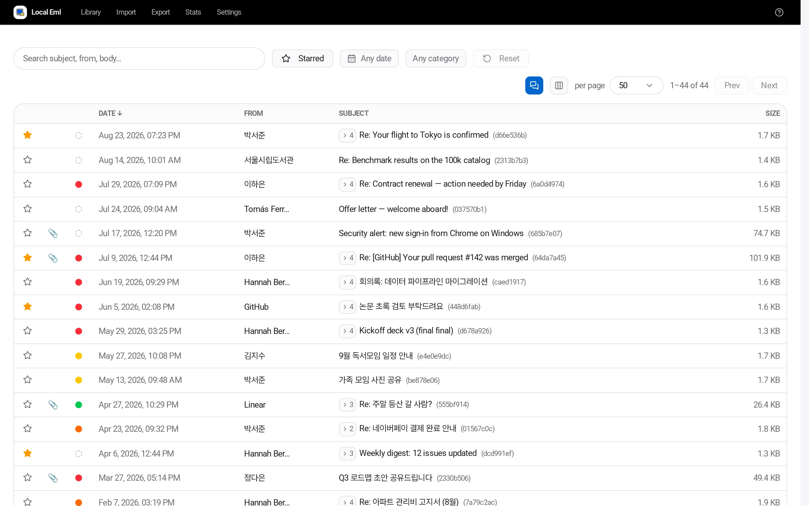
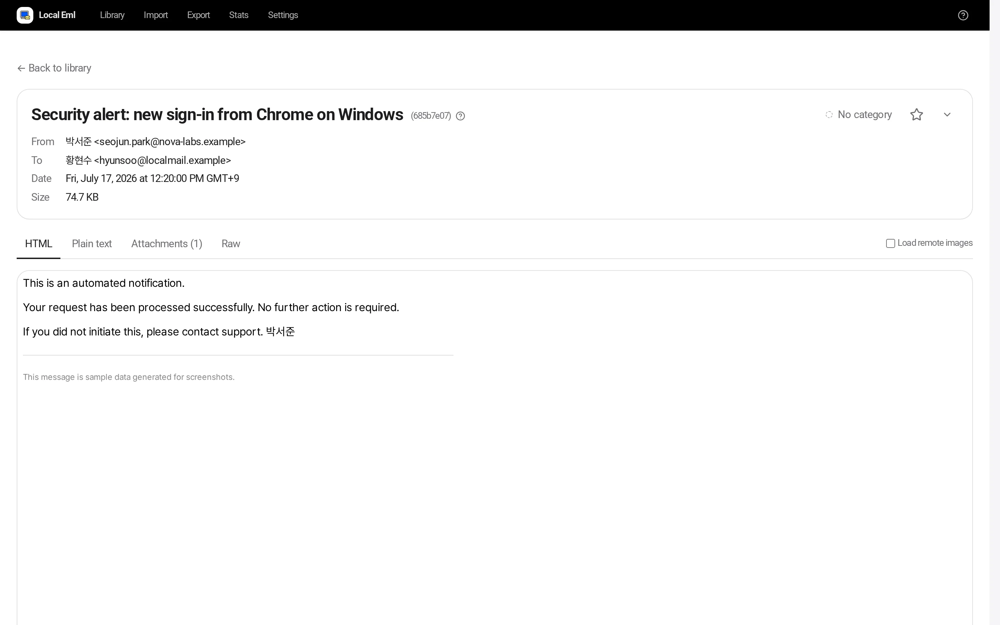

Free, open-source EML viewer
Open your old mail.Keep it on your own disk.
A viewer and archive for .eml, .mbox and .pst files on Windows, macOS and Linux.
Pull messages out of an overflowing mailbox, search them, and read them any time. One file to run, no account, nothing leaves your machine.
Other platforms Windows · macOS · Linux · GPL-3.0

A quiet place to read
Everything runs on 127.0.0.1 in your normal browser. It looks like an app, not a server.

HTML mail in a sandboxed frame, remote images blocked, attachments listed, the whole conversation one click away.
Download and double-click
No installer, no account. Download the file for your OS and open it; Local Eml appears in its own window. Close the window when you're done and nothing keeps running.
Windows
Download local-eml-windows-amd64.exe and double-click it. The first time, Windows may show "Windows protected your PC" because the file is new to it: choose More info → Run anyway.
macOS
Download local-eml-darwin-arm64.app.zip (Apple silicon) or local-eml-darwin-amd64.app.zip (Intel), unzip it and double-click Local Eml. If macOS says it can't verify the developer, go to System Settings → Privacy & Security and choose Open Anyway, then open it again.
Linux
Download local-eml-linux-amd64, mark it executable (chmod +x), and run it. It opens in your browser.
Step-by-step guides: open .eml files · import a Google Takeout .mbox · open a .pst without Outlook · free up Gmail storage
Want it running all the time?
One line installs it as a background service that starts on boot and keeps fetching new IMAP mail. It downloads the latest release and verifies it first.
curl -fsSL https://raw.githubusercontent.com/hwhang0917/local-eml/main/scripts/install.sh | shirm https://raw.githubusercontent.com/hwhang0917/local-eml/main/scripts/install.ps1 | iex
Windows with winget:
winget install hwhang0917.LocalEml (listing pending review).
What it does
Import anything
.eml files, folders, .zip, .mbox (Google Takeout, Thunderbird), Outlook .pst, an S3 bucket, or an IMAP mailbox. Duplicates are skipped by hash.
Search that speaks CJK
Full-text search over sender, subject and body. Korean, Japanese and Chinese work out of the box, and typing just the initial consonants (ㅎㄱ → 한국) finds it too.
Private by design
Listens only on 127.0.0.1. No account, no telemetry, no cloud. IMAP passwords are never stored unless you opt in, and then only encrypted with a key that stays on your disk.
Reads HTML safely
Messages render in a sandboxed frame with remote images blocked by default, so tracking pixels stay blind.
Keeps up with new mail
Turn on background sync for any IMAP profile and it fetches only what is new since last time. Read-only: your mailbox is never modified.
Yours to take with you
Export the whole library as a single .zip or push it to S3. Stars, categories and settings travel with it.
What it isn't: a mail client. You can't compose, send or reply. Keep your usual client for daily mail; use Local Eml for the mail you want to keep but not carry.